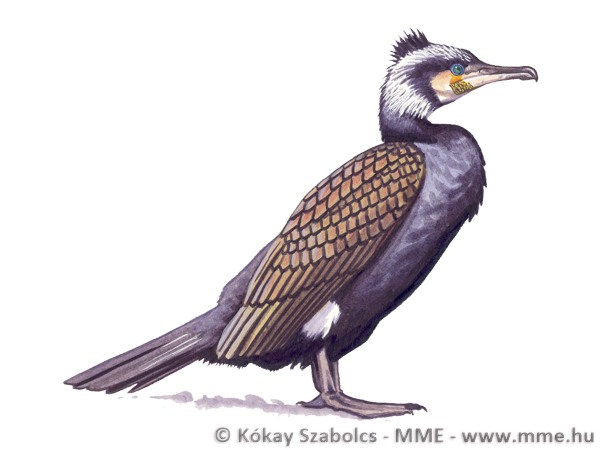

Költési területe Észak- és Közép-Európa, valamint Közép-Ázsia, kelet felé egészen az Amur-folyóig. Dél-Európát és Észak-Afrikát vonulás alkalmával látogatja, de már Egyiptomban a ritka téli madarak közé tartozik. Rövidtávú vonuló, de néha áttelel. Vonulása októberre és márciusra esik, mindazáltal még tél közepén is akadnak egyes példányok, sőt még egyes északi fekvésű szigeteken, például Feröeren és Izlandon is rendesen telelők, mert rossz repülő, s ezért nem is költözik el onnan.
Természetes élőhelyei a nádasok, gyékényes sűrűségek, lápok és mocsarak.
Testhossza 16-17 centiméter, szárnyfesztávolsága 24-26 centiméter, testtömege 34-46 gramm. Zömök testalkatú madár, rövid farokkal és egyenes, hegyes csőrrel. Fejbúbja, tarkója, háta és farka csillogó kék. A szemétől a fülnyílásáig rozsdaszínű folt húzódik, ettől lefelé a nyakán egy kis fehér folt látható. A torkán ugyancsak fehér folt van. A hasa rozsdaszínű. Lába vörös, rövid, ujjai tövükön összenőve.